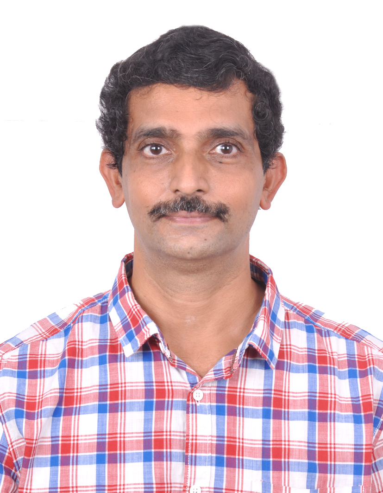

On Programmable Data Plane Network Switches and their Applications to IoT systems
|
Abstract: In Industry IoT systems, the data generated by IoT devices are forwarded
to other intermediate nodes such as aggregation devices, gateway/sink
nodes for processing. Traditional network switches and IoT gateway
nodes are configurable, but not programmable. They can only perform a
small set of specific switching-related activities. The advent of
programmable data planes (PDP), realized using hardware switches, and
the Programming Protocol-independent Packet Processors (P4) language
enable a switch to be customizable and field-programmable. In this
talk, we show how PDP and P4 concepts can be used to realize in-network
computing for Industrial IoT systems.
(This work was done jointly with Ganesh Sankaran and Harsh Gondaliya).
|

Professor Krishna Moorthy Sivalingam
Department of Computer Science and Engineering
Indian Institute of Technology (IIT) Madras
Chennai - 600036, INDIA
|
Brief Bio: Krishna Sivalingam is an Institute Chair Professor in IIT Madras; and
earlier, a faculty member at University of Maryland, Baltimore County;
Washington State University; and University of North Carolina
Greensboro. He received his Ph.D. and M.S. in Computer Science from
SUNY Buffalo; B.E. degree in Computer Science and Engineering from Anna
University's College of Engineering Guindy, Chennai. He has served as
Editor-in-Chief of Springer Photonic Network Communications Journal and
EAI Transactions on Future Internet. He is a Fellow of IEEE, Fellow of
INAE India and ACM Distinguished Scientist.
|
Stateful Container Migration in Geo-Distributed Environments
|
Abstract: Container migration is an essential functionality in large-scale geo-distributed platforms such as fog computing infrastructures. Contrary to migration within a single data center, long-distance migration requires that the container's disk state should be migrated together with the container itself. However, this state may be arbitrarily large, so its transfer may create long periods of unavailability for the container. We propose to exploit the layered structure provided by the OverlayFS file system to transparently snapshot the volumes' contents and transfer them prior to the actual container migration. We implemented this mechanism within Kubernetes. Our evaluations based on a real fog computing test-bed show that our techniques reduce the container's downtime during migration by a factor 4 compared to a baseline with no volume checkpoint.
|
Professor Guillaume Pierre
Univ Rennes, Inria, CNRS, IRISA
Leader of the Myriads research team
Campus universitaire de Beaulieu
263 Avenue du Général Leclerc – Bât 12
35042 Rennes cedex, France
|
Brief Bio: Guillaume Pierre is a Professor in Computer Science at the University
of Rennes 1, France. His main interests are Fog computing, Cloud
computing, and all other forms of large-scale distributed systems. He
took part in several European and EIT Digital projects and acted as
the lead designer of the ConPaaS platform-as-a-Service environment. He
is the coordinator of the FogGuru H2020 Maria-Sklodowska
project, and the leader of the Myriads research team at INRIA/IRISA.
|
Hosts
 |
Dr. Arijit Roy
Assistant Professor
Department of Computer Science and Engineering
Indian Institute of Information Technology Sri City
(An Institute of National Importance under an Act of Parliament)
630 Gnan Marg, Sri City, Chittoor District - 517 646
Andhra Pradesh, India
Website: www.iiits.ac.in/people/regular-faculty/arijit-roy/
|
| |
Dr. Ayan Mondal
Assistant Professor
Department of Computer Science and Engineering
Indian Institute of Technology Indore
Khandwa Road, Simrol, Indore 453552, India
Website: https://www.iiti.ac.in/people/~ayanm/
|
 |
Prrofessor Sudip Misra, PhD, FIEEE, FNAE, FNASc, FIET, FBCS, FRSPH, FIETE
ACM Distinguished Member
Alexander von Humboldt Fellow (Germany)
IEEE Communications Society Distinguished Lecturer
Professor & INAE Abdul Kalam Technology Innovation National Fellow
Department of Computer Science & Engineering
Indian Institute of Technology
Kharagpur-721302
West Bengal, India
Official Website: https://cse.iitkgp.ac.in/~smisra/
SWAN Group: https://cse.iitkgp.ac.in/~smisra/swan/
|
Webinar Registration
All participants need to pre-register by 5 PM (IST), October 12, 2022 by filling-up the following form: Registration Link
WebEx sign-in details will be shared with the registered participants using the email address provided in the registration form.
The Webinar flyer is available here.
|
|